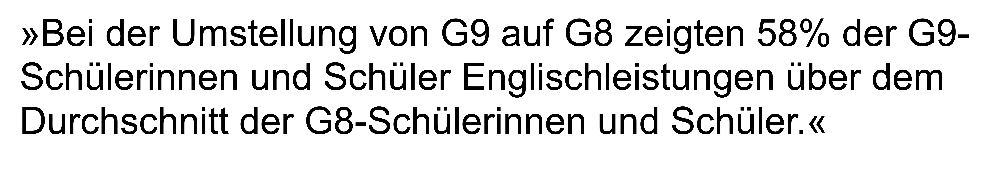
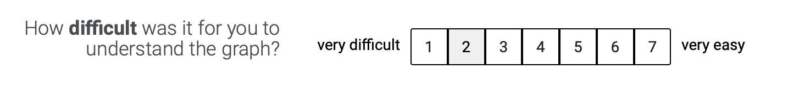

Teachers’ Engagement With Educational Science
How to Communicate Findings From Educational Science in a User-Friendly Way to Teachers
Institut für Schul- und Unterrichtsentwicklung
Dienstag den 23. Juli, 2024
Begriffsklärungen

Begriffsklärungen

Begriffsklärungen

Begriffsklärungen

Begriffsklärungen

Begriffsklärungen

Begriffsklärungen

Arbeitsdefinition
Evidenzinformierte Schulpraxis (EISP)
- durch Forscher:innen aufbereitete Forschungsergebnisse und Theorien

→ Umgang mit Evidenz (engl. engagement with evidence) - praktisches Anliegen
wissenschaftliche Evidenz

Prozessmodell EISP
_adapted_phase1.png)
Prozessmodell EISP
_adapted_phase2.png)
Prozessmodell EISP
_adapted_phase3.png)
Prozessmodell EISP
_adapted_phase4.png)
Prozessmodell EISP
_adapted_phase5.png)
Prozessmodell EISP
_adapted_context.png)
Prozessmodell EISP
_adapted_user.png)
Prozessmodell EISP
_adapted_evidence.png)
Eigene Forschungstätigkeiten
Studie 1

Studie 2
Studie 3

Studie 1
Link zum Paper: https://doi.org/10.1016/j.tate.2023.104134
Design
- Unvollständig 5x6 rotiertes Within-Within-Design
- Within-Faktor 1: Thema
- Within-Faktor 2: statistische Beschreibung
- Standard Signifikanz-Aussage
- Definition des p Wertes
- Beschreibung Bayes Faktor
- Beschreibung von Cohen’s d
- Beschreibung von Cohen’s U3
- Kombinierte Aussage aus Inferenzstatistik und Effektstärke
 |
 |
 |
|  |  |
Abhängige Variablen
- Wahrgenommene Informativität

- Selbstvertrauen in statistische Interpretation

- Interpretation als Inferenstatistik

- Interpretation als Effektstärke


Studie 1
Link zum Paper: https://doi.org/10.1016/j.tate.2023.104134
Eigene Forschungstätigkeiten
Studie 1
Studie 2
Studie 3
Design
Unvollständig 5x6 rotiertes Within-Within-Design in Studie 1
Abhängige Variablen
Interpretation als Inferenstatistik

Interpretation als Effektstärke

Eigene Forschungstätigkeiten
Studie 1
Studie 2
Studie 3
Link zum Manuskript:
Studie 3
Ablauf des Forschungsprojektes

Design
- 4x4x10x2 between-between-within-within Design
- Between-Faktor 1: Experimentalbedingung
- Between-Faktor 2: Thema
- Lesen auf Papier vs. Tablet
- Lernen anhand eines Live-Vortrags vs. Video
- Lernen mittels Experimentieren vs. Computersimulation
- Lernen mittels Erklärvideo mit Untertitel vs. Erklärvideo ohne Untertitel

- Within-Faktor 3: präsentierte Effektstärke
d ∈ {−.80; −.65; −.50; −.35; −.20; .20; .35; .50; .65; .80} - Within-Faktor 4: Visualisierungsart
- Halfeye plots mit Gruppen auf der x-Achse
- Halfeye plots mit Gruppen auf der y-Achse


Abhängige Variablen
- Akuratheit (AV 1)
- Sensitivität (AV 2)

- Wahrgenommene Aufgabenschwierigkeit (AV 3) 
- Effizienz/Dauer (AV 4): Zeit bis zum ersten Akkuratheits- oder Sensitivitätsrating
- Wahrgenommene Informativität (AV 5)

- Wahrgenommener praktischer Wert (AV 6)

- Cohen’s U3 Fehlkonzept: Median der U3 Ratings einer Person < 21.2% (kleinster plausibler Wert, der d = −.8 entspricht)


Studie 3
Link zum Paper: XXX
Eigene Forschungstätigkeiten
Studie 1
Studie 2
Studie 3
Ergebnisse
- unterschiedlich informative statistische Beschreibungen

Adaptiert von Schmidt et al. (2023) - Informativität korreliert mit Selbstvertrauen in statistische Interpretationen

Schmidt et al. (2023) - Differenzierung zwischen Inferenzstatistik und Effektstärken

Adaptiert von Schmidt et al. (2023) - verschiedene Interpretationsprofile sind


Diskussion, Ausblick und Limitationen

Diskussion, Ausblick und Limitationen

Diskussion, Ausblick und Limitationen

Diskussion, Ausblick und Limitationen

Diskussion, Ausblick und Limitationen

Diskussion, Ausblick und Limitationen

{kind=link}
{kind=link}
{kind=link}
{kind=link}
{kind=link}
{kind=link}
{kind=link}
Literatur

Groß Ophoff, J., Brown, C., & Helm, C. (2023). Do pupils at research-informed schools actually perform better? Findings from a study at English schools. Frontiers in Education, 7, Article 1011241. https://doi.org/10.3389/feduc.2022.1011241
Higgins, S., Katsipataki, M., Villanueva Aguilera, A. B., Dobson, E., Gascoine, L., Rajab, T., Reardon, J., Stafford, J., & Uwimpuhwe, G. (2022). The Teaching and Learning Toolkit: Communicating research evidence to inform decision-making for policy and practice in education. Review of Education, 10(1), Article e3327. https://doi.org/10.1002/rev3.3327